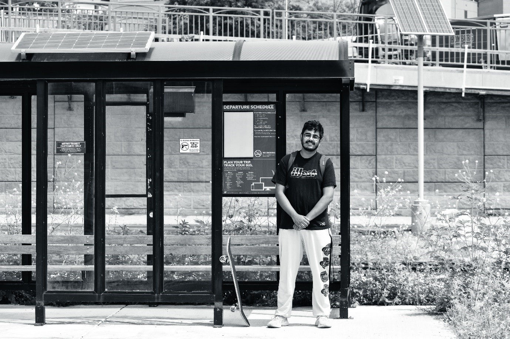
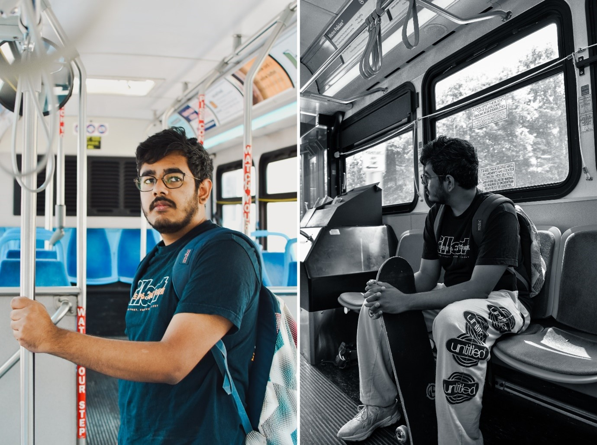
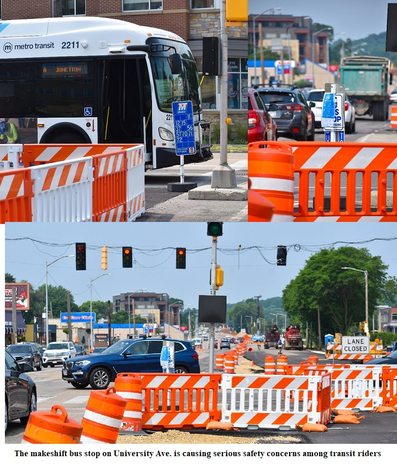
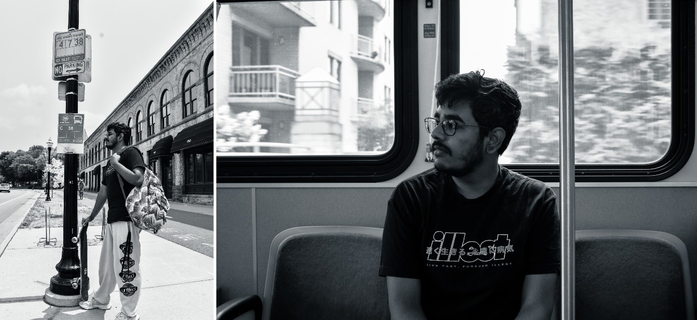
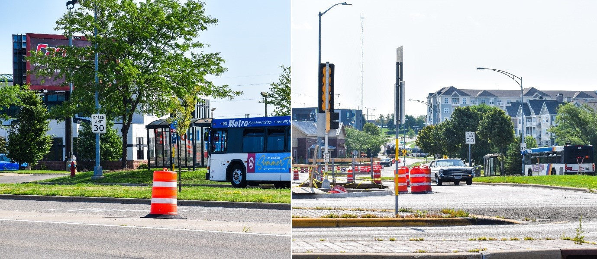
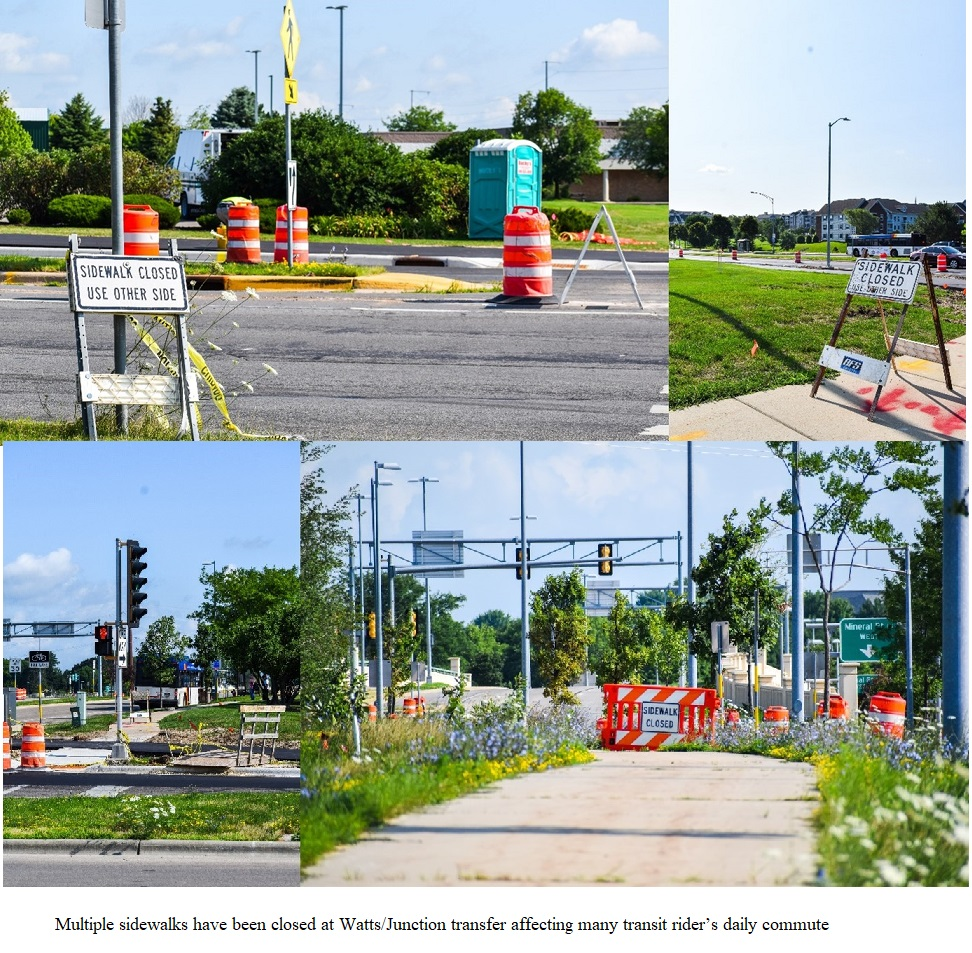

Construction Disruption: A Day in the Life of a Madison Metro Transit Rider
by Krishna M. Nukala | July 23, 2023
The start of the Bus Rapid Transit (BRT) system construction project may mean that Madisonians will have greater access to public transport, reduced commute times, and more equitable and efficient bus services. However, ever since the start of the BRT construction project in April 2023, transit riders have borne the brunt of road closures, lane closures, bus detours and closed sidewalks. This disruption has led to longer wait times at stops and reduced frequency of buses. “Even though the BRT project was meant to encourage the use of public transport in the future, the fallout from how its construction has been handled lately will only lead to increased frustration among transit riders and eventually reduced ridership”, said Vaibhav Vemuganti, a graduate student at the University of Wisconsin-Madison and a transit rider.  A Univerity of Wisconsin Madison Metro Transit riderVaibhav, who has moved to Madison for graduate school from India and doesn’t own a car, depends heavily on public transport to get around the city and for his daily commute to the university. “Since a lot of international students do not own cars, we try to live close to campus and are reliant on the efficiency of the transit system to help us get to classes and jobs on time”, said Vaibhav, who lives in the Regent neighborhood of Madison, a couple of miles away from his lab. His current daily commute starts with waiting for up to 40 minutes at a bus stop near Campus Dr. or University Ave. Those stop areas are currently swamped with heavy construction vehicles, traffic cones and road signs. “I usually take routes A, C, F or R to get to my lab and use Google Maps to check on wait times. However, with the recent construction along University Ave. and Campus Dr. routes, the wait times are horribly exaggerated. The app might show the bus arriving in 5 minutes but it has not been updated to reflect the uncertainty caused by the construction,” he said. While prolonged wait times have been proving to be a bane for transit riders like Vaibhav, infrequent service of bus routes has been a an even bigger hassle. “There have been a couple of times when we would see from afar the bus finally arriving after waiting for a long time only for the electronic signboard on top of bus change to ‘Not in Service’ and for the ETA for that bus route get updated to a later time. I simply did not understand why this happened and ended up being late for one my classes that day”, he said.  On route C to the UW campus from Regent St.The main culprit causing these issues to transit riders continues to be the construction of the BRT system along the main bus routes. For Vaibhav, one prime example of that is stop 2820 at University/University Bay serving routes A, E, C and J. “Due to the BRT system construction, some of the lanes have been closed along this route and the bus stop has been moved to the middle of the road in front of the traffic light. This means that transit riders are left stranded in the middle of the road once they get off the bus”, he said pointing to a gravel pit and a few traffic cones which currently make up this stop and eventually the BRT enclave in the future. There are safety concerns regarding the placement of the bus stop in the middle of the road. “Transit riders already wait several minutes for their bus to arrive but now, waiting for the bus in the middle of a construction zone is extremely dangerous especially for elderly and disabled riders. We are also left waiting for several minutes for the walk-sign at the crosswalk, hoping that no car steers into us during rush hour”, he said. Many UW transit riders use the bus to commute to places besides the campus. For instance, many can take routes A and C to get to downtown or the West Towne Mall. But bus frequency and ridership are equally impacted on the weekends due to the contruction. As we waited at stop 1837 for the C bus to take us from downtown to University Ave., we ended up waiting for 45 minutes under the scorching sun on a Saturday afternoon only for the bus to never show up and disappear off the app with a new estimated time of arrival taking its place. “I think we experienced firsthand what I’ve been talking about all along. Maybe we should just take an Uber back unless you wish to wait another 45 minutes under the sun”, quipped Vaibhav while we waited for the bus to arrive.  Bus trips to downtown or the mall are not hassle-freeAnother sore spot for many transit riders is the Watts/Junction transfer, as it too is experiencing BRT construction disruption. A to-be integral part of line 1 of BRT, construction at the Watts/Junction transfer site has already led to lane closures, bus detours and closed sidewalks, frustrating regular transit riders.  Construction at the Watts/Junction transferA transit rider at the Watts/Junction transfer stated that she has been facing longer commute times for routes A and D since the start of the construction project and hopes that the city introduces shorter service routes so that they are not affected by delays far from her destination, therefore leading to better efficiency. She also mentioned that the multiple closed sidewalks as well as the extremely long delays between walk-signs have been a hindrance to transit riders at the transfer. She also shared similar fears that Vaibhav had regarding the placement of the new BRT enclaves in the middle of the road and opines that it could be unsafe for transit riders especially elderly and disabled riders crossing the street to get to the enclave. A lifeline for many citizens, the Madison Metro transit system cannot afford to let down transit riders like Vaibhav and many others and will have to take into account the current impact of the BRT construction project has on its regular commuters. The City of Madison must ensure that the initiation and implementation of the BRT project will not curtail the very promises it hopes to deliver to its citizens through this project. |